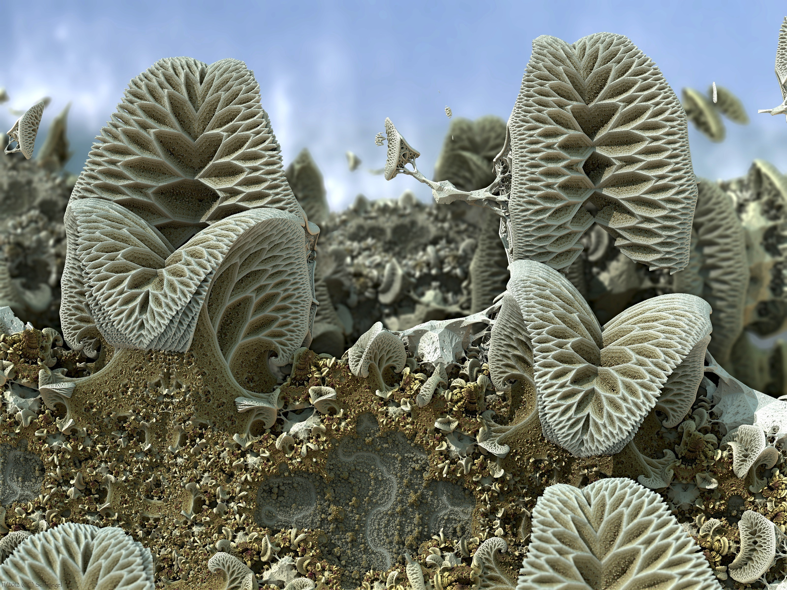

Les Fractales
Les maths cachées dans ton chat
Par Yann Esposito
Moi
- Section Générale au Lycée
- Bac S option Math
- Licence Math/Informatique
- Master Recherche Informatique
- Doctorat Informatique (Intelligence Artificielle)
Les fractales ça peut être très beau
Les fractales ça peut être très étrange

Les fractales ça peut ressembler à la réalité
Les fractales ça existe dans la vie

Les broccolis

Le choux romanesco
Coquille
Paons

Rivières
Les Math avant les fractales (Descartes)

Gaston Maurice Julia
Benoît B. Mandelbrot
Quelle est la longueur des cotes de la Bretagne?

Quelle est la longueur des cotes de la Bretagne?
650km?
Quelle est la longueur des cotes de la Bretagne?
900km?
L-Systems
L-Systems
Inventé en 1968 par le biologiste Aristid Lindenmayer
- Règles de réécritures
- F → F+F-F
- F → F+F-F → F+F-F + F+F-F - F+F-F
- F+F-F + F+F-F - F+F-F
→
F+F-F + F+F-F -F+F-F
+ F+F-F + F+F-F -F+F-F
- F+F-F + F+F-F -F+F-F - 1 → 3 → 9 → 27 → 81 → 243 ...
L-Systems
- Tortue avec un crayon
- F → Avance
- + → Tourne à gauche
- - → Tourne à droite
http://goo.gl/N5fG2
L-Systems

L-Systems
12 fois → 312 = 531441
Longueur ?
F → F+F--F+F
Longueur ?
F → F+F--F+F
Longeur (1): 1.171
Longueur ?
Longeur (2): 1.171×1.171 ≃ 1.371
Longueur ?
Longeur (3): 1.171×1.171×1.171 ≃ 1.605
Longueur ?

Longeur (6) ≃ 2.578
Longueur ?
Longeur (10) ≃ 4.84
Quelle est la longueur des cotes de la Bretagne?
Sans donner de précision, la longueur est sans borne
Elle pourrait être infinie !
En tout cas beaucoup plus que 1000km
Ensemble de Mandelbrot
Une idée de la taille ?
Agrandir de 1 à 6×10228 revient à faire grandir un proton pour être aussi grand que
7 000 000 000 000 000 000 000 000 000 000 000 000 000 000 000 000 000 000 000 000 000 000 000 000 000 000 000 000 000 000 000 000 000 000 000 000 000 000 000 000 000 000 000 000 000 000 000 000 000 000 000 000 000 000 000 000 000 000 000 000 000 000
de fois la taille de l'Univers visible
Une infinité de détail
Avec une tout petite formule: z=z2+c
Exploration
Flame
Une flamme et des mirroirs
On pose une chandelle allumé dans le noir.
Au milieu de quelques miroirs déformants (ou pas)
Video
À vous de jouer
Allez sur http://goo.gl/gkaKZ